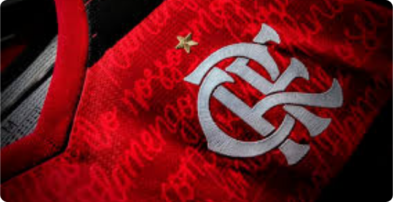

Modelos de carterinha

FÃ CLUBE DO MENGÃO
História do time

O Clube de Regatas do Flamengo, também conhecido simplesmente como Flamengo, é um dos clubes mais populares do Brasil e do mundo. Sua história começa em 17 de novembro de 1895, quando um grupo de remadores se reuniu na Praia do Russel, no Rio de Janeiro, para fundar um clube de regatas.
Nos primeiros anos de sua existência, o Flamengo se destacou no remo, conquistando vários títulos estaduais e nacionais. Em 1912, o clube decidiu criar uma equipe de futebol, que logo se tornou uma das mais fortes do Rio de Janeiro. Em 1914, o Flamengo conquistou seu primeiro título estadual de futebol.
Ao longo dos anos, o Flamengo se consolidou como uma das maiores potências do futebol brasileiro. O clube já conquistou seis títulos da Copa Libertadores da América, dois Mundiais Interclubes, 36 Campeonatos Cariocas, além de vários outros títulos nacionais e internacionais.
O Flamengo é conhecido por ter uma torcida apaixonada e fiel, que costuma lotar o estádio do clube, o Maracanã, em todos os jogos. Entre os ídolos que já vestiram a camisa rubro-negra, destacam-se nomes como Zico, maior artilheiro da história do clube, Júnior, Adílio, Nunes, Leandro, Romário, Ronaldinho Gaúcho, entre outros.
Últimas noticías
O Flamengo cumpriu as expectativas no Maracanã, goleando o Maringá e revertendo o resultado da Copa do Brasil. O inicio de trabalho de Sampaoli nesses três jogos e o placar de 8 a 2 veio com sinais de evolução coletiva e a busca do treinador pela sintonia entre os artilheiros Gabigol e Pedro.
Há 28 anos, o Flamengo não marcava oito gols em um jogo. Contra o Maringá foram quatro em cada tempo para ratificar a superioridade entre os elencos e apagar de vez a derrota por 2 a 0 no primeiro jogo. A primeira obrigação de Sampaoli foi cumprida.
Títulos e taças:

O Flamengo é um dos clubes mais vitoriosos do futebol brasileiro e mundial, tendo conquistado diversos títulos e taças ao longo de sua história. Alguns dos principais são:
6 Copas Libertadores da América (1981, 2019, 2020, 2021, 2022)
2 Mundiais Interclubes (1981 e 2019)
1 Supercopa Libertadores (2020)
1 Recopa Sul-Americana (2020)
8 Campeonatos Brasileiros (1980, 1982, 1983, 1987, 1992, 2009, 2019, 2020)
3 Copas do Brasil (1990, 2006, 2013)
36 Campeonatos Cariocas (a última conquista foi em 2021)
1 Copa dos Campeões (2001)